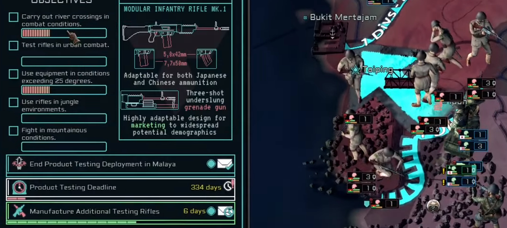

Game Total-Conversion Project - Extra
An example of developing a mechanic for a major update:

The Main Design:
During development of update 1.4 "Silicon Dreams", in which I was involved with much of the content, I set out to designing a mechanic to change the gameplay loop of land-combat - the primary gameplay loop of the default game.
In the original game, the combat gameplay loop for sending a single "unit" to a conflict consists of finding and exploiting a gap in enemy lines in order to push through and rapidly end the conflict.
Whilst the mod already expands such scenarios to add extra mechanical depth, the goal in this update was to create a new way for the player to interact with this gameplay loop.
I designed a system which would track other statistics of the unit in order to gauge "performance", which would than affect the player reward at the conclusion of the conflict or when a player chose to withdraw to save resources.
The base game only tracks this information to promote unit commanders, so a system to take this info and tally it for a different purpose was developed.
I made a GUI to help the player keep track of their objectives and progress, and then made quality of life improvements like always-visible deadline timers to help the player keep track.
QA and Polish:
Once I had finished code and GFX for this first version, I began testing it through close cooperation with our QA team.
Testers would use the mechanic during a testing playthrough, and provide both general feedback as well as statistics of each test.
Statistics and feedback were vital to the fine-tuned balancing of the system, involving many different tracked values and interacting with the other game mechanics such as the economy system.
Test reports showed that the mechanic was enjoyed by players, found to be unique and most importantly given the initial goal, saw players intentionally changing the way in which they played.
Players prioritised creating the ideal conditions to complete objectives, at times even hindering the overlords they were supposed to serve, in order to further the objectives and their rewards for high completion.
This fully achieved the objective of changing the normal gameplay loop and fit into the themes of the update.
Testing also showed that unpredictable AI behaviour could create unsuitable mechanic conditions before player involvement began.
To solve this, I implemented modifiers to the AI controlled countries that impede significant changes to the combat area until the player is actively involved.
These only take effect if the relevant country is player controlled, otherwise leaving AI to act naturally.
Results:
This mechanic was a total success in its design and implementation, and has been well received in the now-released update.
It helped me to develop my skills in design, and developing creative solutions to the problems of using often hard-coded default features.
It also helped me to practise working closely with the mod QA team to refine and improve on concepts.